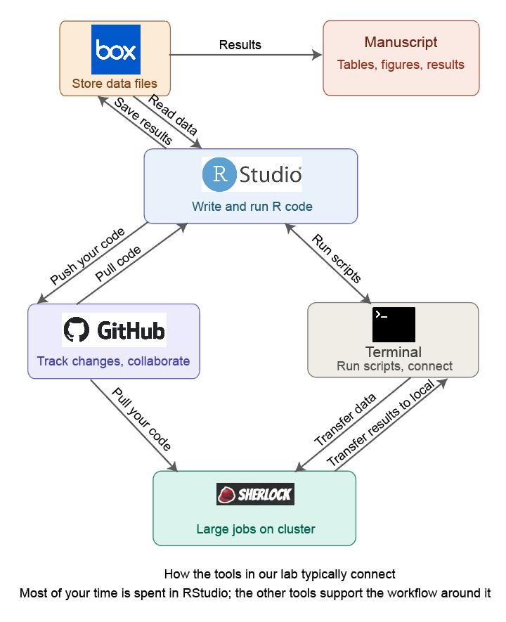

Chapter 5 Getting started
by Jade Benjamin-Chung
This chapter is for students who are new to computational research. It provides a brief overview of the core tools you will use in our lab and how they fit together. Each tool is covered in more detail in later chapters — the goal here is to give you the big picture before you dive in.
5.1 The tools and how they connect
A typical project in our lab involves writing R code to clean data, run statistical analyses, and produce tables and figures for a manuscript. That code lives in a GitHub repository so that multiple people can collaborate on it and so that every change is tracked. Some projects involve large datasets or computationally intensive analyses that need to run on Stanford’s Sherlock computing cluster rather than your laptop. The terminal (command line) is how you interact with Sherlock and how you run scripts outside of RStudio.

Here is how these tools relate to each other:
- RStudio is where you write and run R code interactively. You will spend most of your time here.
- GitHub is where your code is stored and shared. It tracks every change, lets multiple people work on the same project, and is where code review happens.
- The terminal (also called the command line) is how you run scripts outside of RStudio, interact with GitHub from the command line, connect to Sherlock, and run bash scripts that execute your full analysis pipeline.
- Sherlock is Stanford’s computing cluster. You use it when your analysis is too slow or too memory-intensive to run on your laptop.
- Box is where we store large data files that should not be pushed to GitHub (e.g., datasets with protected health information).
You do not need to be an expert in all of these before starting. Most students learn them incrementally as they work on their first project. But you should have each tool set up and be comfortable with the basics described below before you begin coding.
5.2 RStudio
RStudio is an integrated development environment (IDE) for R. It provides a text editor for writing scripts, a console for running code interactively, a file browser, and tools for viewing plots and data. Download it from posit.co.
A few things to set up right away:
- Turn off saving the workspace on exit. Go to Tools > Global Options > General and set “Save workspace to .RData on exit” to “Never.” This prevents old objects from persisting between sessions, which is a common source of irreproducible results.
- Enable soft-wrap. Go to Tools > Global Options > Code and check “Soft-wrap R source files” so that long lines wrap on screen rather than running off the edge.
- Use RStudio projects. Every project in our lab should have an
.Rprojfile. When you open an.Rprojfile, RStudio sets the working directory to the project folder, which means file paths work consistently for everyone. See the Code repositories chapter for more detail.
If you are new to R, work through the first few chapters of R for Data Science before starting your first project. If you took an introductory R course, you likely already know enough to get started — most of what you need beyond that you will learn on the job.
5.3 GitHub intro
GitHub is a platform for version control and collaboration. In practice, this means:
- Every change you make to your code is recorded with a short description (a “commit”). If something breaks, you can see exactly what changed and revert it.
- Multiple people can work on the same codebase without overwriting each other’s work.
- Before code is incorporated into the main project, it goes through a code review via a “pull request,” where another team member checks it for correctness and clarity.
To get started:
- Create a free account at github.com.
- Install GitHub Desktop, which provides a graphical interface for common Git operations (cloning, committing, pushing, pulling). You can also use Git from the terminal, but GitHub Desktop is easier when you are starting out.
- Ask Jade to add you to the relevant Github repositories.
You do not need to understand Git deeply to start — the basics are: pull (download the latest code), commit (save a set of changes with a description), and push (upload your commits to GitHub). The GitHub chapter covers this in more detail, including branching and pull requests.
5.4 The terminal
The terminal (called Terminal on Mac, or Git Bash on Windows) is a text-based interface for interacting with your computer. You will use it to:
- Run bash scripts that execute your full analysis pipeline end-to-end
- Connect to Sherlock via SSH
- Use Git from the command line (optional if you prefer GitHub Desktop)
If you have never used the terminal before, the key concepts are:
- You type commands and press Enter to execute them.
cdchanges your directory (folder),lslists the files in your current directory, andpwdshows where you are.- You run an R script from the terminal with
Rscript my_script.Ror a bash script withbash run_all.sh.
On Mac, Terminal is pre-installed (find it in Applications > Utilities). On Windows, install Git for Windows, which includes Git Bash. The Unix commands chapter covers the commands you will use most often.
5.5 Sherlock
Sherlock is Stanford’s high-performance computing cluster. You will use it when your analysis requires more memory or computing power than your laptop can provide — for example, running bootstrapped confidence intervals across many subgroups, or fitting models on large datasets.
You do not need Sherlock for every project, and you will typically develop and test your code locally in RStudio first. When you are ready to run on Sherlock, the Slurm and cluster computing chapter walks through the setup. To get access, ask Jade to request an account for you.
5.6 Box
We use Stanford Medicine Box to store data files that are too large for GitHub or that contain protected health information (PHI). GitHub repositories should never contain data — they contain only code, documentation, and small configuration files. Your project’s configuration file (0-config.R) will include paths that point to the relevant Box folder so that your scripts can read and write data. See the Communication and coordination chapter for more on how we use Box.
5.7 A typical first week
When you join the lab and are assigned to a project, here is roughly what your first week of setup looks like:
- Install R, RStudio, and GitHub Desktop. Configure RStudio as described above.
- Create a GitHub account and get added to the lab organization.
- Clone the project repository using GitHub Desktop.
- Open the
.Rprojfile in RStudio. - Run
renv::restore()to install the correct package versions (see Reproducible environments). - Get access to the project’s Box folder and set up your local Box sync so that data paths in the config file work.
- Try running the project’s main bash script or a single analysis script to make sure everything is set up correctly.
If something doesn’t work, that is normal — environment setup is often the hardest part. Ask a current lab member for help before spending hours debugging on your own.